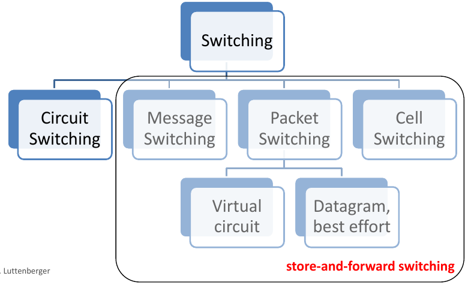

Man kann Netzwerke charakterisieren über
| Kriterium | ||||
|---|---|---|---|---|
| Abdeckung (Coverage) | Local Area Network (LAN) | Wide Area Network (WAN) | Personal Area Network (PAN) | Metropolitan Area Network |
| Vermittlung (Switching) | Packet Switching | Circuit Switching | Cell Switching | (shared medium) |
| Übertragungsmedium | Kupfer | Glasfaser | Radiowellen | Infrarot |
| Netzwerktopologie | Bus | Star | Ring | Mesh |
| Mobilität | Stationär (fixed) | mobil | drahtlos (wireless) | |
| Betreiber (Operator) | privat | öffentlich | (virtuell privat) |
Unterschied zwischen mobilen und drahtlosen Netzwerken:
| Kriterium | |
|---|---|
| Abdeckung (Coverage) | LAN |
| Vermittlung (Switching) | Packet Switching, shared medium |
| Übertragungsmedium | Kupfer, Glasfaser |
| Netzwerktopologie | Bus, Star |
| Mobilität | Stationär |
| Betreiber (Operator) | private |
| Kriterium | |
|---|---|
| Abdeckung (Coverage) | LAN |
| Vermittlung (Switching) | Packet Switching, shared medium |
| Übertragungsmedium | Radiowellen |
| Netzwerktopologie | Star |
| Mobilität | drahtlos |
| Betreiber (Operator) | private |
| Kriterium | |
|---|---|
| Abdeckung (Coverage) | WAN |
| Vermittlung (Switching) | Packet Switching, Circuit Switching |
| Übertragungsmedium | Kupfer |
| Netzwerktopologie | Star, Mesh |
| Mobilität | Stationär |
| Betreiber (Operator) | öffentlich, virtuell private |
Switching bezeichnet die Art und Weise, wie die Verbindung in einem Netzwerk vermittelt wird. Man unterscheidet: Packet Switching und Circuit Switching

Figure 1: Übersicht über Switching Technologien
Beim packet switching (dt. Paketvermittlung) werden Nachrichten in einzelne packets (dt. Packete) aufgeteilt. Jedes Paket enthält die notwenidgen Informationen um das Paket zur Zieladresse zu transportieren und kann einzeln übertragen werden. Jeder Netzknoten, den das Paket passiert speichert das Paket so lang zwischen bis er es weiter senden kann (engl. store-and-forward switching). D.h. Bandbreite im Datenkanal wird nur während der Übertragung eines Pakets zwischen zwei Knoten beansprucht. Nach Abschluss der Übertragung steht die Bandbreite wieder zur Verfügung.
Ein Paket aus:
Man unterscheidet zwischen
Vorteile:
Nachteile:
Jedes Paket enthält alle Addressinformationen und wird unabhängig von den anderen Paketen geroutet. D.h. Pakete können über unterschiedliche Netzknoten übertragen und somit mit unterschiedlicher Verzögerung übertragen werden. Insbesondere können Pakete daher in veränderter Reihenfolge ankommen. Im Zielsystem werden die Pakete entsprechend ihrer Laufnummern zusammengesetzt und die Nachricht extrahiert. Dadurch wird dem Nutzer ein virtueller Datenkanal (engl. virtual circuit) vorgegaukelt.
Im Fall von connectionless packet switching besteht der Header eines Pakets aus:
Nachteile:
Bspeispiele: UDP, IP
Vor Übermittlung der Pakete wird ein Verbindung ausgehandelt. Dazu wird in die Switching tables jedes Netzwerkknotens der Verbindung die Adresse des jeweils nächsten Knotens geschrieben und der Verbingung ein eindeutiger Identifier (ID) zugeordnet. Beim Aufbau der Verbindung können die Parameter der Verbindung (z.B. ???, etc.) ausgehandelt werden. Adressinformationen werden nur während des Verbindgsaufbaus benötigt, wenn die Route festgelegt wird. Die einzelnen Pakete enthalten dieses Informationenn nicht mehr.
Im Fall von connection-oriented packet switching besteht der Header eines Pakets aus:
Die Datenübertragung erfolgt in 3 Phasen:
Beispiele: TCP
Beim circuit switching (auch line switching; dt. Leitungsvermittlung) wird einer Nachrichtenverbindung zeitweilig ein durchgeschalteter Datenkanal mit fester Bandbreite zur exklusiven Nutzung zur Verfügung gestellt. Bsp: Telefonnetz.
Bus: Alle Knoten teilen sich eine Leitung.
Ring: Alle Nodes sind in einem Ring zusammengeschaltet. Z.B. in
Star: Viele Knoten laufen in einem Knoten zusammen (z.B. DHCP Server)
Mesh: Knoten sind direkt miteinander verbunden, es gibt keine zentralen Knoten (z.B. das Internet)
Vorteile: